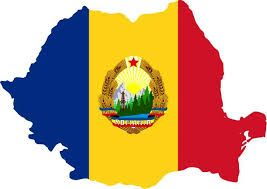

Journey 03 · București Note 2 of 5 Chronicles of
Romania and Communism

As I have traveled around the country, I have noticed that Romania is a place that absorbs change without disappearing, overcoming challenges and adapting to new worlds. The Dacians who first settled here were conquered by the Romans, but they did not vanish, adapting and persisted long after the Romans left the region. For centuries, the country was at the edge of larger powers, pulled between empires, influenced, occupied, and restructured – yet, the Romanian identity persisted.
Not unchanged, but as an accumulation of the rich history, adding, adapting, and folding in influences in architecture, language, food and culture. The more I talk to people, the more I learn about a culture shaped by resilience and transformation, and the more I realize I need to understand the history of the country to understand what it is I see today.
Hunedoara gave me some insight to the medieval history of the region. Bucharest was an opportunity to better understand the communist period of Romania.
In 1940, Romania lost large parts of its territory in a matter of just a few months through a series of forced concessions after trying to remain neutral in World War II. Huge swaths of the country were divided up between Bulgaria, Hungary, and the Soviet Union. This loss was humiliating to the military, who had been directed to retreat rather than resist, and it shattered the confidence in the existing government and monarchy.
With the king’s position badly weakened, a popular military general rose to power during the crisis and the king was forced to abdicate. Under the leadership of General Ion Antonescu, Romania joined the Axis, largely in an attempt to recover the territory lost to the Soviet Union. But his efforts did not stop at just recovery. Romanian troops advanced deep into Soviet territory, all the way to Stalingrad where the war turned disastrous.
After that military reversal, the Soviet army pushed westward into Romania and brought with them a period marked by fear, violence, looting and sexual violence. At this point, General Antonescu was removed from power in a coup, and Romania switched sides. Formally, this looked like a return to democracy for Romania, but reality was quite different.
The coup was successful in part due to the involvement of the communists. While not dominant on their own, they became power players in this period of instability. By 1945, the king was forced to accept a communist government. In 1946, elections were organized, but widely understood to be openly manipulated by the government with many votes coming from cemeteries and women. By 1947, the King was exiled and Romania formally became a communist state aligned with the Soviet Union.
That’s the political timeline. But it’s not the full story – it never is. Walking through Budapest, I learned about the dual systems of communism: The official reality and the lived reality. I listened to stories about how mundane constraints shaped systems and cultures, and how scarcity was not s symptom of failure but a tool of control logic. And under all the politics, controls and systems, the ways in which informal systems were adapted and became part of how people survived. Trading, relationships, workarounds, and sometimes (but not always) resistance.
There is still so much I am learning, and as I talk with people, I gain insights to the many different experiences that people had during this period. The normal ways in which people experienced and lived during this time, what it meant to be Romanian during these decades, and how that has shaped their feelings about the world today.
Originally published at fieldnotesfromabroad.com/2026/04/05/field-notes-romania-and-communism/